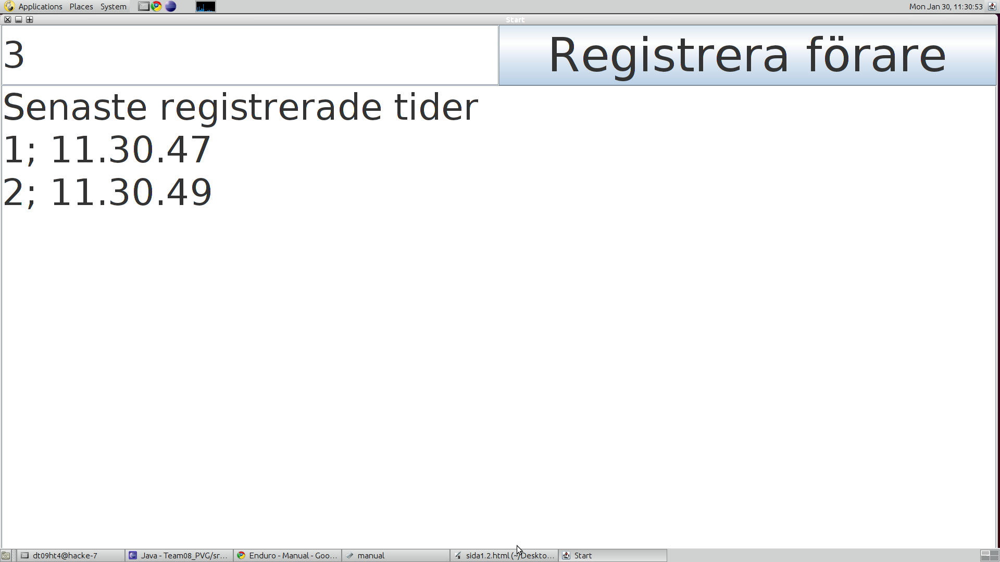

1.2 Starta program
Registreringsprogrammet
- Se till så att ditt system kan öppna .jar filer. (dvs Java Runtime Environment skall vara installerat)
- Starta programmet. Det ska se ut ungefär som bild 1.0.
- Skriv in startnummret för föraren och tryck Registrera förare. Enligt bild 1.0 (på bilden är föraren 1 och 2 registrerade och 3 påväg att bli registrerad.)
- När du har registrerat färdigt så har det skapats en fil som heter Register.txt. Denna bör döpas om till förslagsvis starttid/måltid, annars kommer filen fyllas på med fler tider om du startar programmet och registrerar fler förare. Alternativt kan man flytta Result.txt till en annan mapp. Det viktiga är att Result.txt är tom när programmet körs från början.
1.0 - En bild på registreringsprogrammet

Sorteringsprogrammet
- Starta Terminalen.
- Navigera till mappen där Sorteringsprogrammet finns.
- Skriv i terminalen: "java -jar Sorter.jar"
- Fyll i namnet på starttidsfilen, måltidsfilen, namnfilen, resultatsfilen samt ange tävlingsform i form av en siffra.
- Sorteringsprogrammet har nu skapat en resultatsfil med namnet du tidigare angett.